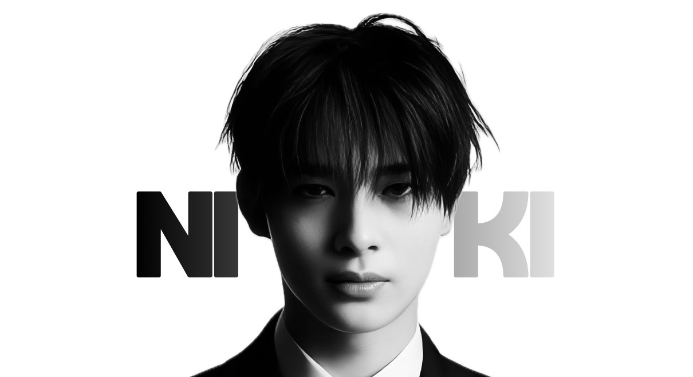

어린 시절부터 춤에 대한 천재적인 재능을 선보이며 대중의 이목을 집중시킨 니키는, 엔하이픈의 퍼포먼스를 세계적인 수준으로 끌어올리는 팀의 명실상부한 '메인 댄서'이자 강력한 무기이다. 무대 위에 서는 순간 180도 달라지는 날카로운 눈빛과 온몸의 근육을 자유자재로 통제하는 정교한 춤선은 보는 이들에게 경외감을 선사하며, 팀의 전체적인 퍼포먼스에 압도적인 아우라와 몰입감을 더한다. 시간이 흐를수록 더욱 깊어지는 매력적인 중저음 보컬로 음악의 무게감을 단단히 잡아주는 그는, 타고난 감각과 무대를 향한 지독한 열정으로 매 순간 한계 없는 성장을 증명해 내는 글로벌 탑클래스 아티스트이다.
무대 위를 지배하는 카리스마 넘치는 플레이어지만, 조명이 꺼진 뒤의 니키는 영락없이 장난기 가득하고 사랑스러운 엔하이픈의 막내이다. 형들을 무척 좋아하고 잘 따르며, 일상 속에서 유쾌한 장난을 자처해 팀의 분위기를 활기차게 만드는 비타민 역할을 톡톡히 해낸다. 부끄러움이 많으면서도 주변을 세심하게 살피는 다정한 성품을 지녔으며, 어린 나이에 타국에서 꿈을 이루기 위해 묵묵히 버텨온 올곧고 단단한 내면은 모두에게 큰 감동을 준다. 이처럼 천재적인 재능과 무해하고 순수한 소년미, 그리고 프로페셔널한 열정을 동시에 지닌 니키는 엔하이픈의 무대를 가장 트렌디하고 완벽하게 완성하는 빛나는 아이콘이다.
니시무라 리키 Nishimura Riki
2005년 12월 9일 출생
메인댄서
일본, 오카야마현
186cm
B형
INTJ
춤
게임, 볼링, 안무영상 및 다큐멘터리 감상
막냉이, 퓨마, 자이언트 베이비
만두, 붕어빵, 한식
카리스마 막내